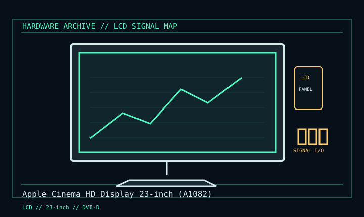

[ INDIVIDUAL COMPONENT // DISPLAYS ]
Apple Cinema HD Display 23-inch (A1082)
Aluminum 16:10 desktop LCD, 2002–2004 generation. LCD

IDENTIFICATION: Verify the complete model/revision on the rear label. Specifications are tied to the cited manual/specification; variant-dependent values are qualified rather than generalized.
Specifications
| Catalog subcategory | Lcd Displays |
|---|---|
| Exact product/family | Apple Cinema HD Display 23-inch (A1082) |
| Era | Aluminum 16:10 desktop LCD, 2002–2004 generation. |
| Panel / image | 23-inch TFT active-matrix LCD; 1920 × 1200 at 60 Hz; 16:10. Brightness/contrast figures vary by production revision. |
| Signal / inputs | Single DVI digital video input; USB 2.0 and FireWire 400 ports are hubs, not video inputs. |
| Power / mechanics | Model-matched external Apple adapter (A1097 family; 90 W adapter rating) and separate DVI/USB/FireWire leads. Aluminum enclosure. |
| Care | Check the A1082-specific mounting and power instructions for the unit. |
Revision, signal & host compatibility
A1082 is not the earlier ADC Cinema Display. Check label, bundled adapter and cables; all are needed. Modern HDMI/DisplayPort operation needs a compatible digital DVI adapter; bandwidth, EDID and HDCP support depend on source and adapter.
Match source signal type, sync/timing, connector pinout, bandwidth and power path to this exact display. Physical connector fit alone does not establish electrical or timing compatibility.
Preservation & repair notes
Preserve original PSU and cable set; test display and data hubs separately. Inspect cable strain relief and panel uniformity. Clean per Apple guidance; adapter/panel repair requires suitable service knowledge.
Record model suffix, serial/date label, accessories, image condition, configuration, source document and repair history. CRT high-voltage, LCD backlight and OLED panel risks require appropriate service training and the correct manual.
Manufacturer manuals & references
- Apple Cinema HD Display documentation indexApple manufacturer documentation portal; choose exact 23-inch model.
- Apple Cinema HD Display 23-inch User ManualArchived setup, power and care reference.